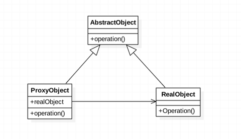

举例:电影院看电影,电影开始前买爆米花,广告播放
这里电影院就是受电影公司委托播放电影的代理对象
代理模式可以在不修改被代理对象的基础上，通过扩展代理类，进行一些功能的附加与增强。值得注意的是，代理类和被代理类应该共同实现一个接口，或者是共同继承某个类
总结：不管是静态代理还是动态代理，代理与被代理者都要实现两样接口，它们的实质是面向接口编程。
springcloud java elk idea 设计模式
Copyright © 2015 Powered by MWeb, Theme used GitHub CSS.